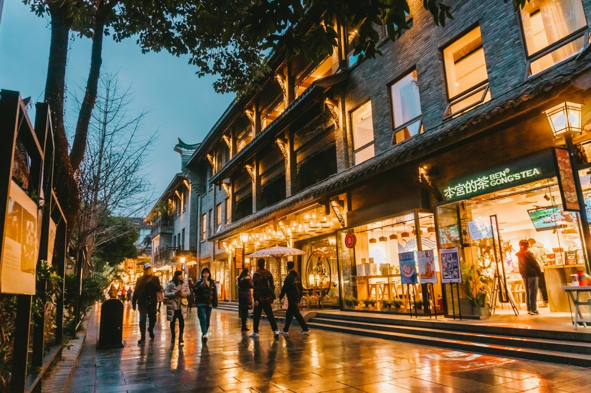

城市映像 / CITY IN MOTION
看见成都，不止一面
从雪山到街巷，从清晨的茶香到深夜的火锅。二十秒，跟随镜头，听见这座城市的呼吸。
00:00 / 00:21
成都城市宣传短片 · 00:21
SHOT IN CHENGDU · SICHUAN · CHINA

关于成都 / ABOUT CHENGDU
一座来了，
就不想走的城市
成都，一座被雪山与烟火同时偏爱的城市。它地处四川盆地腹地，沃野千里、河网纵横，自古便有“天府之国”的美誉。两千三百余年的建城史，将古蜀文明、三国故事、诗歌风雅与市井生活层层叠印在街巷之间。天气晴好的清晨，雪山会从城市天际线尽头现身，薄雾与金光一同漫过屋檐。
清晨，人民公园的盖碗茶揭开一天的序幕；午后，宽窄巷子的青砖灰瓦藏着慢时光；入夜，火锅翻滚、川剧唱腔与锦江灯火一同升温。这里既有都江堰的千年智慧、青城山的清幽道韵，也有大熊猫的憨态可掬与街头巷尾的创意活力。街边小店、独立书店与年轻厂牌，让古老城市始终保持新鲜。
快与慢、古与今，在成都相处得恰到好处。它不急着向你证明什么，却总能在某个转角，让你卸下旅途的疲惫。无论为一口辣、一眼雪山，还是为一段慢时光而来，成都都会以自己的节奏接纳你。来一次成都，便懂得何为“来了就不想走”。
成都
CHENGDU, SICHUAN
30.67°N · 104.06°E
30.67°N · 104.06°E
2300+
年建城史
4500+
年古蜀文明
2
项世界遗产
2100万+
常住人口
城市切片 / EXPLORE
三条线索，读懂成都
从舌尖到山水，从街巷到戏台。成都的魅力，藏在热气腾腾的日常里，也藏在代代相传的手艺中。

诗中的成都 / A CITY IN POEMS
“九天开出一成都，—— 李白《上皇西巡南京歌》
万户千门入画图。”